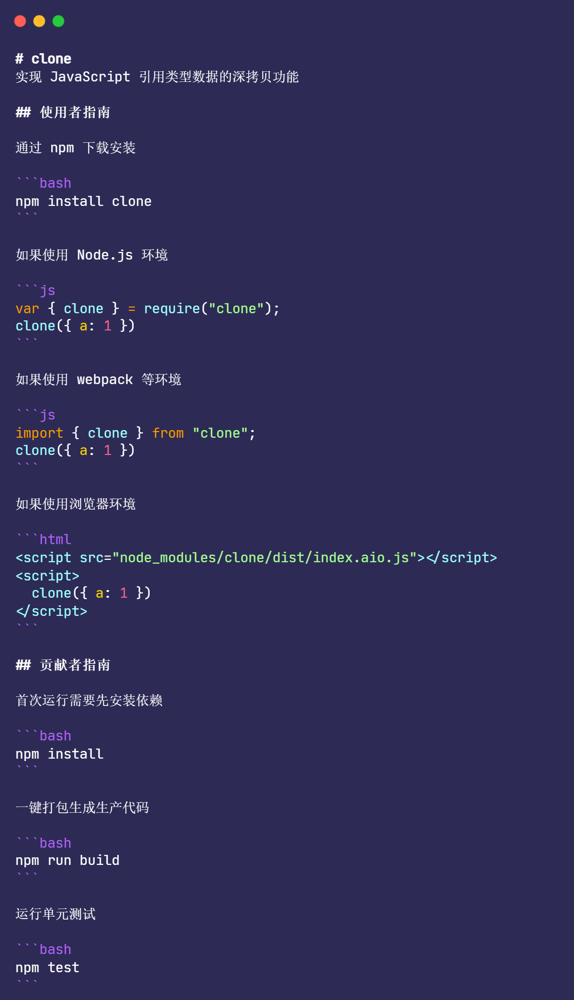
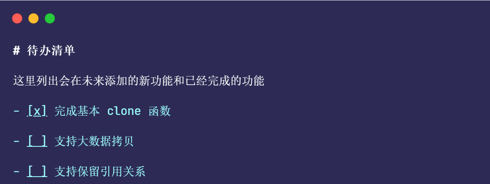
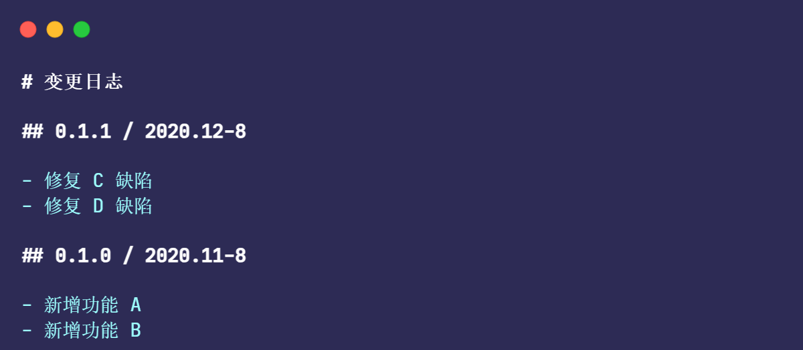

目前，代码层面的工作已经完成，接下来就需要将库发布给使用者。
但是要想使我们的库称为一个标准开源库，还需要完成一些额外的工作。
比如，如何将我们的库开源到 Github 上，以便开发者找到我们的库，以及如何将构建后的代码发布到 npm 上，方便开发者下载、使用我们的库。
选择开发协议
在开源之前，需要先选择一个开源协议
添加开源协议的主要目的：明确声明自己的权利。
如果没有开源协议，则会有两种可能：
一种可能是会被认为放弃所有权利，此时可能会被剽窃、抄袭等
另一种可能是会被认为协议不明，一般商业项目都会很小心地选择使用的库，如果缺少协议，则一般不会使用
此外，如果开源库存在缺陷，并因此给库的使用者造成了损失，则可能会有法律纠纷，这对于库的开发者来说是非常不利的。
但是通过协议可以提前规避这些问题，综上，建议一定要添加开源协议。
开源项目常用的开源协议有 5 个：分别是 GPL、LGPL、MIT、BSD、Apache
前端项目使用最多的开源协议是 MIT、BSD 和 Apache
| MIT | BSD | Apache | |
|---|---|---|---|
| 商业用途 | √ | √ | √ |
| 可以修改 | √ | √ | √ |
| 可以分发 | √ | √ | √ |
| 授予专利许可 | √ | ||
| 私人使用 | √ | √ | √ |
| 商标使用 | × | ||
| 承担责任 | × | × | × |
综上，MIT 和 BSD 协议比较相似，Apache 协议的要求则更多，下面是整理的使用这 3 个开源协议在 Github 上排名靠前的项目，可以看到，在影响力较大的项目中，使用 MIT 和 Apache 协议的项目更多一些。
| 协议 | 项目 |
|---|---|
| MIT | jQuery、React、Lodash、Vue.js、Angular、ESLint |
| BSD | Yeoman、node-inspector |
| Apache | ECharts、Less.js、math.js、TypeScript |
一般的库建议选择 MIT 协议，如果涉及到专利技术，则可以选择 Apache 协议，
这里为我们编写的深拷贝库选择 MIT 协议，首先，我用下面的命令在根目录下新建一个 LICENSE 文件：
touch LICENSE
接下来，在 LICENSE 文件中添加如下内容，这个协议可以在网上找到，需要注意的是：要修改 “当前年份”，并将 “开发者的名字” 替换为自己的名字
MIT License
Copyright (c) 当前年份 开发者的名字
Permission is hereby granted, free of charge, to any person obtaining a copy of this software and associated documentation files (the "Software"), to deal in the Software without restriction, including without limitation the rights to use, copy, modify, merge, publish, distribute, sublicense, and/or sell copies of the Software, and to permit persons to whom the Software is furnished to do so, subject to the following conditions:
The above copyright notice and this permission notice shall be included in all copies or substantial portions of the Software.
THE SOFTWARE IS PROVIDED "AS IS", WITHOUT WARRANTY OF ANY KIND, EXPRESS OR IMPLIED, INCLUDING BUT NOT LIMITED TO THE WARRANTIES OF MERCHANTABILITY, FITNESS FOR A PARTICULAR PURPOSE AND NONINFRINGEMENT. IN NO EVENT SHALL THE AUTHORS OR COPYRIGHT HOLDERS BE LIABLE FOR ANY CLAIM, DAMAGES OR OTHER LIABILITY, WHETHER IN AN ACTION OF CONTRACT, TORT OR OTHERWISE, ARISING FROM, OUT OF OR IN CONNECTION WITH THE SOFTWARE OR THE USE OR OTHER DEALINGS IN THE SOFTWARE.
MIT 协议是比较宽松的协议，对使用者唯一的要求就是保留协议即可，但也声明了不承担任何责任，是对库开发者的保护，
完善文档
当使用一个库时，我们希望有清晰完整的文档，
文档的格式推荐使用 markdown 语法，
一个标准的前端库文档应该包含如下内容：
README
待办清单
变更日志
API 文档
README
README 是库的使用者最先看到的内容，README 的好坏在一定程度上直接影响库的使用者的选择，README 的书写原则是主题清晰、内容简洁。
一个合格的 README 的应该包括如下内容：
库的介绍：概括介绍库解决的问题
使用者指南：帮助使用者快速了解如何使用
贡献者指南：方便社区为开源库做贡献
首先在根目录下新建一个 README.md 文件，并在该文件中添加下面的 Markdown 代码：
待办清单
待办清单用来记录即将发布的内容或未来计划，待办清单的主要目的有两个:
一是告诉库的使用者当前库未来支持的功能，
二是让库的开发者将其作为备忘，提醒自己将来要交付的功能。
在项目的根目录下添加 TODO.md 文件，其内容格式如下所示: 分别记录已经完成的待办事项和未完成的待办事项。
变更日志
变更日志用来记录每次更新详细的变更内容，变更日志的主要目的有两个：
一个方便库的使用者升级版本时了解升级的内容，从而避免升级可能带来的风险；
另一个是方便库的开发者记录变更备忘；
变更日志一般会记录版本号、变更时间和具体的变更内容，变更内容要尽量做到简洁明了。
在项目的根目录下添加 `CHANGELOG.md`` 文件，该文件中的内容如下，每次发布新版本时都要在这里记录更新信息。
API 文档
API 文档用来提供更详细的内容，包括每个函数的参数、返回值和使用示例。
根据库的功能多少，创建 API 文档时可以选择以下 3 种方案：
功能较少，可以直接写在 README.md 中
内容较多，可以单独写一个文件
API 数量众多，可以要考虑专门做个网站来提供详细的文档功能，
这里选择第 2 种方案，在项目的根目录下添加 doc/api.md 文件，该文件中的内容如下：
发布
发布到 Github 上
发布到 npm 上
npm 解决了库分发下载的各种问题，npm 是全球最大的包托管平台，提供了开源库托管、检索和下载功能。
将开源库发布到 npm 上后，用户只需要一条命令即可完成库的下载工作。
首先需要注册一个 npm 账号，npm 支持将库发布到全局空间和用户空间下两种方式，
推荐读者将库发布到自己的账号下，因为全局空间名字冲突的概率很大。
此外，npm 也提供了组织（Organization）功能，本书所有代码均发布在 jslib-book 这个组织下面。
完成账号注册后，如果想要通过命令行将库发布到 npm 上，则首先需要在命令行中登录账号，登录成功后可以通过 whoami 命令查看当前的登录账号，实例如下：
npm login
# 输入账号、密码、邮箱等信息
npm whoami
# yanhaijing # 此处显示登录的用户名
在将库发布之前，需要做一些准备工作。
并不是所有代码都需要发布到 npm 上的，无用的代码发布到 npm 上不仅会浪费存储空间，也会影响使用者的下载库的速度。
从理论上来说，只需要发布 dist 目录和 LICENSE 文件即可。因为，README.md、CHANGELOG.md 和 package.json 文件是默认发布的。
npm 提供了黑名单和白名单两种方式过滤文件
先来介绍黑名单的方式：
npm 不仅会自动忽略 .gitignore 文件中的文件，还会忽略 node_modules 目录和 package-lock.json 文件，
如果还需要忽略其他文件，则可以在根目录下添加一个 .npmignore 文件，该文件的格式和 .gitignore 文件的格式是一样的，.npmignore 文件中的规则匹配的文件都会被 npm 忽略。
# .npmignore
config
doc
src
test
对于黑名单的方式，在新增不需要发布的文件时，容易因为忘记修改 .npmignore 文件而导致误上传一些无用文件，因此推荐使用白名单的方式，
如果在 package.json 文件中添加 files 字段，则只有在 files 中的文件才会被发布，
{
"files": ["/dist", "LICENSE"]
}
如果两种方式同时存在，则 npm 会忽略黑名单的配置。
配置好要发布的文件后，运行 npm pack --dry-run 命令可以验证哪些文件会被发布。
每次开源库有更新都会向 npm 发布新的包，npm 通过版本号来管理一个库的不同版本。
发布到 npm 上的包需要遵循语义化版本，其格式为 “主版本号.次版本号.修订号-先行版本号”，可以简写为 “x.y.z-prerelease”，每一位的含义如下：
x 代表不兼容的改动
y 代表新增了功能，向下兼容（当 x 为 0 时，y 的变更也可以不向下兼容）
z 代表修复 Bug，向下兼容
prerelease 是可选的，可以是被 “.” 分割的任意字符
prerelease 一般用来发布测试版本，在程序尚未稳定时，可以先发布测试版本，稳定后再发布正式版本
下面是一组测试版本号和正式版本号的示例：
# 测试版本号
1.0.0-alpha.1
1.0.0-beta.1
# 正式版本号
1.0.0
1.0.1
下面开始发布版本：
在发布新版本前，首先需要修改版本号，同时要同步更新 CHANGELOG.md 文件，添加变更记录，然后直接运行 publish 命令即可。
正式包发布很简单，而测试包则需要借助 npm 提供的标签功能，如果不添加标签，则默认会发布到 latest 标签，发布到其他标签（如 beta）的包需要指定版本号才能安装，
npm publish --tag=beta # 发布测试包
npm publish # 发布正式包
如果是位于 scope 下的包，如位于 jslib-book 这个组织下的包 @jslib-book/clone1，那么直接使用 npm 发布会遇到如下报错：
$ npm publish
npm ERR! code E402
npm ERR! 402 Payment Required - PUT https://registry.npmjs.org/@jslib-book%2fclone1 - You must sign up for private packages
这是因为 npm 命令在发布 scope 下的包时，会默认将其发布为私有包，然而只有付费用户才可以发布私有包。此时只需要给 npm 命令添加参数 --access public，将包发布为公开包即可。
npm publish --access public # 发布成功
如果不想每次发布包时都添加参数，则可以修改 package.json 文件，在该文件中添加 publishConfig 字段，publishConfig 字段配置如下，这样在发布包时就可以在 npm 命令中省略参数 --access public 了。
{
"publishConfig": {
"registry": "https://registry.npmjs.org",
"access": "public"
}
}
在发布成功后，还需要添加 Git tag，如果没有 Git tag，那么当想要找到历史上某个版本对应的源代码时，就需要翻找 Git 历史才能找到，既麻烦，又容易出错，
git tag 1.0.0 # 添加指定版本的 tag
git push --tags # 将 tag 推送到远端
npm 提供了 version 命令也可以修改版本号，和手动修改版本号相比，npm 除了可以修改版本号，还可以自动添加 Git tag。
npm 提供了 4 个子命令，分别用来修改版本号的 4 个位置。
# 初始版本号是 1.0.0
npm version prerelease --preid=beta # 修改版本号为 1.0.0-beta.0
npm version prerelease --preid=beta # 修改版本号为 1.0.0-beta.1
npm version patch # 修改版本号为 1.0.1
npm version minor # 修改版本号为 1.1.0
npm version major # 修改版本号为 2.0.0
下载安装包
在包发布成功之后，可以使用 npm 命令安装测试。需要注意的是，对于测试版本的包，需要显示指定版本号才可以安装成功。
npm i @jslib-book/clone1 # 安装最新正式版本
npm i @jslib-book/clone1@1.0.0-beta.1 # 安装测试版本
统计数据
发布后可以关注库的使用情况，及时了解库的使用数据，以及库的受欢迎程度，
Github 数据
1. GitHub 数据
2. npm 数据
3. 自定义数据
npm 命令行为每个执行的命令都提供了 pre 和 post 钩子，分别代表命令执行之前和之后。
例如，在执行 npm install 命令时，npm 实际上会执行下面 3 条命令：
npm run preinstall
npm install
npm run postinstall
通过 npm 提供的 postinstall 钩子，即可实现自定义统计数据。
首先修改 package.json 文件，注册 postinstall 钩子，
{
"scripts": {
"postinstall": "node postinstall.js"
}
}
当使用者安装我们的库时，会自动使用 Node.js 执行 postinstall.js 文件中的内容，需要注意的是，如果使用者在安装我们的库时使用了参数 --ignore-scripts，则跳过执行 postinstall 钩子。
npm install xxx # 执行 postinstall.js 文件
npm install --ignore-scripts xxx # 不执行 postinstall.js 文件
在项目根目录下添加 postinstall.js 文件，
const axios = require("axios").default;
axios.get("/tongji/install_count").then(function (response) {
console.log(response);
});
对于一般公司内部的项目，可以通过上述方式来收集更详细的信息，如仓库地址等，而对于公开的项目，则应该谨慎使用上述方式来统计数据，使用 postinstall 钩子来统计数据在开源库中比较少见，postinstall 钩子常见的用法是安装后做一些初始化工作。